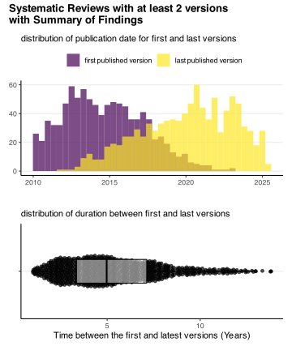
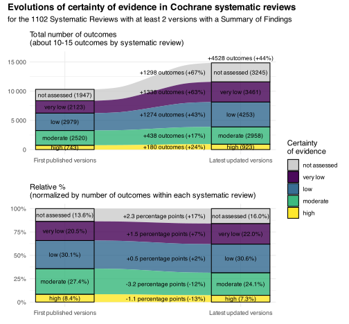

knitr::opts_chunk$set(warning=F, message=F, results=F, fig.align ="center", dev='svg')# Load the function filesource("functions.R")#included:#-loads the core tidyverse package#-set the default scale_color and scale_fill to viridis themelibrary(ggbeeswarm) # for geom_quasirandom()library(scales)library(viridis)library(ggalluvial)library(patchwork)library(ggrepel)
selection of SR versions
Garder première et dernière version et alcule durée
Code
df_SOF <-read_csv("output_data_scrapped/summary_of_findings/SR_SOF_confidence.csv")glimpse(df_SOF)# 1) Summarise each SR by how many versions it has and its min/max datesversion_dates <- df_SOF %>%group_by(DOI_unique) %>%summarise(n_versions =n_distinct(version_stage),date_first =min(Published),date_last =max(Published),.groups ="drop" ) %>%# keep only SRs with ≥ 2 distinct versionsfilter(n_versions >=2)# 2) Bring those dates back onto the full dataset,# then filter to rows at exactly the first or last date.df_first_last <- df_SOF %>%inner_join( version_dates %>%select(DOI_unique, date_first, date_last),by ="DOI_unique" ) %>%filter(Published == date_first | Published == date_last)# durée entre les 2 versions (probablement faire un filtre pour enlever les durées trop courtes ou trop longues)versions_duration <- df_first_last %>%group_by(DOI_unique) %>%summarise(date_first =min(Published),date_last =max(Published),duration_years =time_length(interval(date_first, date_last), "years"),.groups ="drop" )
time between the 2 versions
for now we remove SR for which the duration between the 2 versions is <1 year or >15 years (we will have to better filter) and also the ones before 2010
Code
versions_duration <- versions_duration %>%filter(date_first >=as.Date("2010-01-01")) %>%filter( duration_years>1& duration_years<15 )#Plot as quasirandom points + boxplotgg1 <-ggplot(versions_duration, aes(x =as.factor(""), y = duration_years)) +# jittered points for each DOIgeom_quasirandom(alpha =0.7, width =0.2) +# overlay boxplot (no outliers drawn)geom_boxplot(color ="black", width =0.3, outlier.shape =NA, alpha=.5) +# flip so box is horizontalcoord_flip() +# labelslabs(title ="",subtitle ="distribution of duration between first and last versions",x =NULL,y ="Time between the first and latest versions (Years)" ) gg2 <-ggplot(versions_duration) +geom_histogram(aes(date_first, fill ="first published version"), alpha=.7, bins =40) +geom_histogram(aes(date_last, fill ="last published version"), alpha=.7, bins=40) +theme(legend.position ="top") +labs(fill="", y=NULL, x=NULL, subtitle ="distribution of publication date for first and last versions")gg2 / gg1 +plot_annotation(title ="Systematic Reviews with at least 2 versions\nwith Summary of Findings" )

Code
length(unique(versions_duration$DOI_unique))
there are about 1000 SRs
alluviate plot of certainty change
idée: mettre à côté le % d’augmentation
Code
# how many SRs we’re plottingnb_SR_selected <- df_first_last %>%distinct(DOI_unique) %>%nrow()# rebuild plot_data in one pipelineplot_data <- df_first_last %>%# keep only the first & last versionsfilter(Published %in%c(date_first, date_last)) %>%# label them directly from those datesmutate(version_label =factor(if_else(Published == date_first,"First published versions","Latest updated versions"),levels =c("First published versions", "Latest updated versions") ),# recode NA *and* “unable to attribute” into “not assessed”certainty_of_evidence =if_else(is.na(certainty_of_evidence) | certainty_of_evidence =="unable to attribute","not assessed", certainty_of_evidence ),certainty_of_evidence =factor( certainty_of_evidence,levels =c("not assessed", "very low", "low", "moderate", "high") ) ) %>%# count and compute proportionscount(version_label, certainty_of_evidence, name ="count") %>%group_by(version_label) %>%mutate(prop = count /sum(count),percent = prop *100 ) %>%ungroup()# color mapvir_cols <-rev(viridis(4, option ="viridis"))my_colors <-c("high"= vir_cols[1],"moderate"= vir_cols[2],"low"= vir_cols[3],"very low"= vir_cols[4],"not assessed"="grey80")# %‐change on countspct_df <- plot_data %>%filter(version_label =="Latest updated versions") %>%arrange(fct_rev(certainty_of_evidence)) %>%group_by(version_label) %>%mutate(cum_below =cumsum(count) - count,y_pos = cum_below + count/2 ) %>%ungroup() %>%left_join( plot_data %>%filter(version_label =="First published versions") %>%select(certainty_of_evidence, first_count = count),by ="certainty_of_evidence" ) %>%mutate(count_diff = count - first_count,pct_change = (count / first_count -1) *100,pct_label =sprintf("%+.0f%%", pct_change),label =paste0(ifelse(count_diff >=0, "+", ""), count_diff," outcomes (", pct_label, ")" ) )# %‐change on proportionspct_prop_df <- plot_data %>%filter(version_label =="Latest updated versions") %>%arrange(fct_rev(certainty_of_evidence)) %>%group_by(version_label) %>%mutate(cum_below =cumsum(prop) - prop,y_pos = cum_below + prop/2 ) %>%ungroup() %>%left_join( plot_data %>%filter(version_label =="First published versions") %>%select(certainty_of_evidence, first_prop = prop),by ="certainty_of_evidence" ) %>%mutate(prop_diff = prop - first_prop,pp_diff = prop_diff *100,pct_change = (prop / first_prop -1) *100,pct_label =sprintf("%+.0f%%", pct_change),label_pp =paste0(ifelse(pp_diff >=0, "+", ""), sprintf("%.1f", pp_diff)," percentage points (", pct_label, ")" ) )# —— compute total %‑change across all outcomes ——total_delta <- plot_data %>%group_by(version_label) %>%summarise(total =sum(count), .groups="drop") %>%pivot_wider(names_from = version_label,values_from = total ) %>%mutate(# raw difference in outcome countscount_diff =`Latest updated versions`-`First published versions`,# relative % change as beforepct_total = (`Latest updated versions`/`First published versions`-1) *100,# build the combined labeltotal_label =paste0(ifelse(count_diff >=0, "+", ""), count_diff," outcomes (",sprintf("%+.0f%%", pct_total),")" ) )# — 1) Build a bias‐corrected data frame from the raw df_first_last —bias_data <- df_first_last %>%# only the two snapshotsfilter(Published %in%c(date_first, date_last)) %>%# tag first vs latestmutate(version_label =factor(if_else(Published == date_first,"First published versions","Latest updated versions"),levels =c("First published versions", "Latest updated versions") ),# unify missing / “unable…” into “not assessed”certainty_of_evidence =if_else(is.na(certainty_of_evidence) | certainty_of_evidence =="unable to attribute","not assessed", certainty_of_evidence ),certainty_of_evidence =factor( certainty_of_evidence,levels =c("not assessed", "very low", "low", "moderate", "high") ) ) %>%# count outcomes *within* each Version × label × certaintycount(Version, version_label, certainty_of_evidence, name ="n_certainties") %>%# convert each Version’s counts to proportionsgroup_by(Version, version_label) %>%mutate(prop_certainties = n_certainties /sum(n_certainties)) %>%ungroup() %>%# now aggregate across Versions to get one value per label × certaintygroup_by(version_label, certainty_of_evidence) %>%summarise(count =sum(prop_certainties),.groups ="drop" ) %>%group_by(version_label) %>%mutate(prop = count/sum(count) )# —— 1) Compute the per‐stratum pp‐change & %‐change on bias_data —— pct_bias_df <- bias_data %>%# only the updated sidefilter(version_label =="Latest updated versions") %>%# stack in reverse so y_pos matches the geom orderarrange(fct_rev(certainty_of_evidence)) %>%group_by(version_label) %>%mutate(cum_below =cumsum(prop) - prop,y_pos = cum_below + prop/2 ) %>%ungroup() %>%# join back the first‐version proportionsleft_join( bias_data %>%filter(version_label =="First published versions") %>%select(certainty_of_evidence, first_prop = prop),by ="certainty_of_evidence" ) %>%mutate(# percentage‐point differencepp_diff = (prop - first_prop) *100,# relative % changepct_change = (prop / first_prop -1) *100,# build the labellabel_change =sprintf("%+.1f percentage points (%+.0f%%)", pp_diff, pct_change ) )
Code
# alluvial of absolute countsgg_counts <-ggplot(plot_data,aes(x = version_label,stratum = certainty_of_evidence,alluvium = certainty_of_evidence,group = certainty_of_evidence, y = count,fill = certainty_of_evidence)) +geom_flow(stat ="alluvium",aes(group = certainty_of_evidence),alpha =0.8 ) +geom_stratum(color ="black", alpha =0.8) +geom_text(stat ="stratum",aes(label =paste0(after_stat(stratum), " (", after_stat(count), ")")),size =3, color ="black") +geom_text(data = pct_df,aes(x =1.6, y = y_pos, label = label), # ← use the new `label` columnnudge_x =0.2,hjust =1,size =3,show.legend =FALSE ) +geom_text(data = total_delta,aes(x ="Latest updated versions",y =`Latest updated versions`,label = total_label ),vjust =-0.5, # nudge above the topsize =3,inherit.aes =FALSE# don’t pick up the old mappings ) +scale_fill_manual(values = my_colors, name ="Certainty\nof evidence") +scale_x_discrete(expand =c(0.1, 0.1)) +scale_y_continuous(labels =label_number(drop0trailing =TRUE), limits =c(0, 16000)) +labs(subtitle ="Total number of outcomes\n(about 10-15 outcomes by systematic review)", x =NULL, y =NULL) +theme_minimal() +theme(legend.position ="right")# alluvial of relative percentagesgg_perc <-ggplot(plot_data,aes(x = version_label,stratum = certainty_of_evidence,alluvium = certainty_of_evidence,group = certainty_of_evidence,y = prop,fill = certainty_of_evidence)) +geom_flow(stat ="alluvium", # ← specify the alluvium stataes(group = certainty_of_evidence),alpha =0.8 ) +geom_stratum(color ="black", alpha =0.8) +geom_text(stat ="stratum",aes(label =paste0(after_stat(stratum)," (", percent(after_stat(count), 0.1), ")")),size =3, color ="black") +geom_text(data = pct_prop_df,aes(x =1.6, y = y_pos,label = label_pp ),nudge_x =0.2,hjust =1,size =3,show.legend =FALSE ) +scale_fill_manual(values = my_colors, name ="Certainty\nof evidence") +scale_x_discrete(expand =c(0.1, 0.1)) +scale_y_continuous(labels =percent_format()) +labs(subtitle ="Relative % (from raw total number of outcomes)", x =NULL, y =NULL, title ="") +theme_minimal() +theme(legend.position ="right")# — 2) Draw the bias‐corrected alluvial (each column sums to 100%) —gg_bias <-ggplot(bias_data,aes(x = version_label,stratum = certainty_of_evidence,alluvium = certainty_of_evidence,group = certainty_of_evidence,y = prop,fill = certainty_of_evidence)) +geom_flow(stat ="alluvium", alpha =0.8) +geom_stratum(color ="black", alpha =0.8) +# label each block with its percent within that versiongeom_text(stat ="stratum",aes(label =paste0(after_stat(stratum)," (",sprintf("%.1f", prop*100),"%)" )),size =3, color ="black" ) +geom_text(data = pct_bias_df,aes(x =1.6,y = y_pos,label = label_change ),inherit.aes =FALSE,nudge_x =0.2,hjust =1,size =3,color ="black" ) +scale_fill_manual(values = my_colors, name ="Certainty\nof evidence") +scale_x_discrete(expand =c(0.1, 0.1)) +scale_y_continuous(labels =percent_format()) +labs(subtitle ="Relative %\n(normalized by number of outcomes within each systematic review)",x =NULL, y =NULL, title ="" ) +theme_minimal() +theme(legend.position ="right")# combine with shared legend & dynamic titlegg_counts / gg_bias +plot_layout(guides ="collect") +plot_annotation(title ="Evolutions of certainty of evidence in Cochrane systematic reviews",subtitle =paste("for the", nb_SR_selected, "Systematic Reviews with at least 2 versions with a Summary of Findings") )

change when matched
Code
# 1) lecture + préparation inchangéecsv_file <-"output_data_scrapped/summary_of_findings/SOF_at_least_2_versions_matched_outcomes.csv"temp <-read_csv(csv_file) %>%filter(!is.na(match_id), nb_versions ==2) %>%mutate(match_id_global =as.integer(factor(paste(DOI_unique, match_id, sep ="_"),levels =unique(paste(DOI_unique, match_id, sep ="_")))),certainty_of_evidence =case_when(is.na(certainty_of_evidence) ~"not assessed", certainty_of_evidence =="unable to attribute"~"not assessed",TRUE~ certainty_of_evidence ) ) %>%group_by(match_id_global) %>%filter(n() ==2) %>%arrange(Published, .by_group =TRUE) %>%summarise(first =first(certainty_of_evidence),last =nth(certainty_of_evidence, 2),.groups ="drop" ) %>%mutate(first_certainty = first) %>%pivot_longer(cols =c(first, last),names_to ="version",values_to ="certainty" ) %>%mutate(version =recode(version, first ="first", last ="last"),certainty =factor(certainty,levels =c("not assessed","very low","low","moderate","high")),first_certainty =factor(first_certainty,levels =c("not assessed","very low","low","moderate","high")) )# 2) résumé des comptagessummary_df <- temp %>%count(first_certainty, version, certainty) %>%group_by(first_certainty, version) %>%mutate(prop =round(n /sum(n), 2))# 3) palettemy_colors <-c(high ="#22a884",moderate ="#2a788e",low ="#414487",`very low`="#440154",`not assessed`="darkgrey")# position of the text labels of the right columnsx_position_text <-2.9# 4) plot absolugg1 <-ggplot(summary_df,aes(x = version, y = n, fill = certainty)) +geom_col(alpha = .8) +# # total PICOs au-dessus du "first"# geom_text(# data = filter(summary_df, version == "first"),# aes(label = n, colour = certainty),# vjust = -0.5, size = 3, fontface = "bold.italic",# show.legend = FALSE# ) +# # counts dans le stack du "last"# geom_text_repel(# data = filter(summary_df, version == "last"),# aes(label = n, y = n, colour = certainty, x=x_position_text),# position = position_stack(vjust = 0.5),# direction = "y",# size = 3, fontface = "bold.italic",# show.legend = FALSE# ) +facet_wrap(~ first_certainty, nrow =1) +scale_fill_manual(values = my_colors) +scale_color_manual(values = my_colors) +scale_x_discrete(expand =expansion(add =c(0, 1.5))) +labs(x =NULL,y ="Number of PICOs",fill ="GRADE\ncertainty",subtitle ="certainty of the first published version" ) +ylim(0, 1700)# 5) plot relatif (%)gg2 <-ggplot(summary_df,aes(x = version, y = n, fill = certainty)) +geom_col(position ="fill", alpha = .8) +geom_text_repel(data =filter(summary_df, version =="last"),aes(label =percent(prop), y = prop, colour = certainty, x=x_position_text),position =position_stack(vjust =0.5),direction ="y",size =3, fontface ="bold.italic",show.legend =FALSE ) +scale_y_continuous(breaks =seq(0, 1, .2),labels = scales::percent_format() ) +coord_cartesian(ylim =c(0, 1.1)) +scale_x_discrete(expand =expansion(add =c(0, 1.5))) +facet_wrap(~ first_certainty, nrow =1) +scale_fill_manual(values = my_colors) +scale_color_manual(values = my_colors) +labs(x ="Systematic Review version",y =NULL,fill ="GRADE\ncertainty" )# 6) assemblage(gg1 / gg2) +plot_annotation(title ="Change in GRADE Certainty of Evidence in Cochrane Summary of Findings",subtitle ="for similar topics (PICOs) across first and last published versions of a review" ) +plot_layout(guides ="collect")